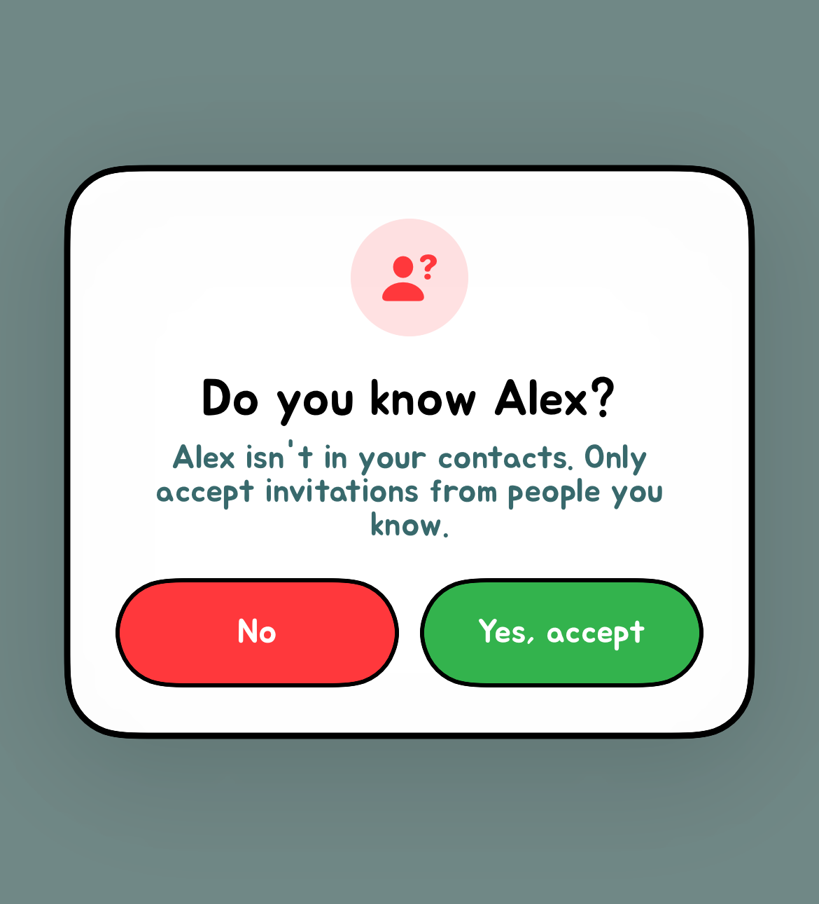
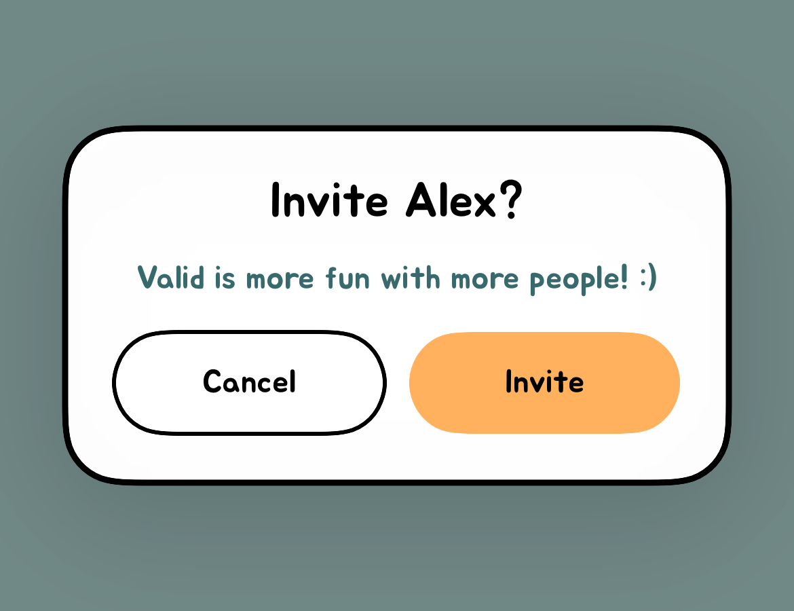

FAQ for Parents
You deserve to understand the apps your child uses. Here is why we're building Valid, how its features work, and what to do if something doesn't feel right.
Our mission
Help students feel appreciated, build connections, and communicate with kindness and respect.
So much of social media today revolves around watching an endless stream of content. We believe there should also be space for students to connect with people they know, express appreciation, and build friendships within their communities.
We're building Valid to make it easier to express appreciation, start conversations, and strengthen friendships within school communities. That purpose also means taking concerns about privacy, spending, and harmful behavior seriously.
Your questions, answered
What is Valid, and who is it for?
We created Valid to give students a safe space to connect within their communities. Students can only add classmates and people in their contacts; they cannot add strangers outside those groups. We believe keeping connections within those familiar circles creates a safer environment for students.
Through positive polls, chats, and Stories, students can express appreciation and build friendships with the people around them. Valid is for students ages 13 and older, as set out in our Terms.
Are votes really anonymous? Can someone find out who voted?
Voter identities are hidden by default, but anonymity is not absolute. Valid has reveal features that can show a voter's name and profile photo to the person who received the vote. Eligible anonymous question authors can also be revealed. We want to encourage positive statements that students can stand behind, which is why Valid does not offer complete anonymity.
Does Valid make money from curiosity about who voted?
Yes. Valid offers a paid subscription called God Mode, which includes reveal benefits. Those benefits can disclose an identity, rather than just provide a clue. Reveal allowances and any additional in-app point costs are explained in the app.
Wanting to know who voted can create pressure to spend. We encourage families to discuss that before a purchase. Review the price, renewal period, and included benefits together; paying for a feature should never be treated as a measure of someone's worth or friendships.
Can an app built around compliments still be used for bullying?
We care deeply about students' experience on Valid, and we do our best to make it a kind, welcoming place. Every poll is reviewed by a human moderator before it is published. Our rules prohibit bullying, harassment, impersonation, and manipulating votes. Students also have reporting and blocking tools to help protect their experience.
Our moderation SLA is under 15 minutes. That is our commitment to a fast moderation turnaround when content needs review.
No social app can prevent every harmful interaction, including sarcasm or conflict that carries over from school. If something feels wrong, we want students and parents to report it so we can address it.
What should we do about an upsetting question, comment, or user?
Use the report or block controls available on the relevant content or profile. You can also email support@validapp.lol with the username, what happened, and where it appeared. Avoid posting a child's personal information in public comments.
Why does Valid ask for a school and access to contacts?
A school selection helps organize the school community. Contacts help match people a student knows and support friend discovery, polls, and invitations.
We encourage students to chat only with people in their contacts or people they know directly at school. If they do not recognize someone, they should decline the conversation or block the user.
Valid puts this choice into the app: students can review a chat invitation and choose Accept or Decline before joining. For group invitations, they can also review who's in the group before deciding. If someone isn't in their contacts, or Valid can't verify the contact match, an additional safety prompt reminds them to accept only invitations from people they know.

Can someone be included or receive a text before joining?
All texts from Valid are user-initiated. Someone who knows you took an action on Valid that prompted the text — Valid doesn’t send unsolicited messages or independently reach out to people who haven’t joined.
You received the text because of that user’s action, not because Valid created an account for you or contacted you on its own.
Here is an example of the invite prompt a user can see after voting for someone who hasn't joined. Tapping Invite opens a text message composer, where the user can review the invitation and choose whether to send it.

If you or your child do not want to participate, email support@validapp.lol and ask for information removal, text opt-out, and suppression from voting. We usually respond within five minutes. We're also working on a self-service way to delete your information and opt out.
What about pressure to check notifications or compare popularity?
Votes, notifications, and uncertainty about who responded can make a social app hard to put down. A compliment can feel good, while receiving fewer votes or trying to interpret a response can feel upsetting. Poll activity is not a reliable measure of a student's value or how much people care about them.
Talk about how using Valid actually feels. Families can turn off notifications in device settings, agree on time away from the app, and set spending boundaries. If using it is making your child anxious or excluded, taking a break is a reasonable choice.
What information does Valid collect, and is it sold?
We do NOT buy or sell data, nor will we ever.
Valid handles account and school details, shared contacts, activity and purchase information, uploaded content, and technical information needed to operate the service. Our Privacy Policy explains sharing with service providers and other circumstances, such as legal requests.
This parent FAQ explains the product. The Privacy Policy contains the fuller information about data use, sharing, and retention.
How do we cancel a subscription or leave Valid?
For a subscription purchased through Apple, manage or cancel it in the Apple account's subscription settings. Deleting the app or a Valid account does not cancel that subscription.
Use the account-deletion option in Valid where available, or contact support@validapp.lol. If your child has never joined, you can still request removal of their information. Tell support separately if you also want messages stopped and the phone number excluded from voting.
What should I ask my child before they use Valid?
Start with what they want from it: connecting with friends, joining conversations, or seeing poll results. Then discuss who may see their activity, what identity reveals mean, which contacts they are sharing, and whether purchases are allowed.
Make a plan for what they will do if someone is unkind or they feel pressure to participate. They should know they can come to you, report a problem, or leave without having to defend that choice.
Have a question about your child?
Parents and caregivers can contact us at support@validapp.lol, including to report a potentially underage account. Tell us what you need help with so we can review the situation.